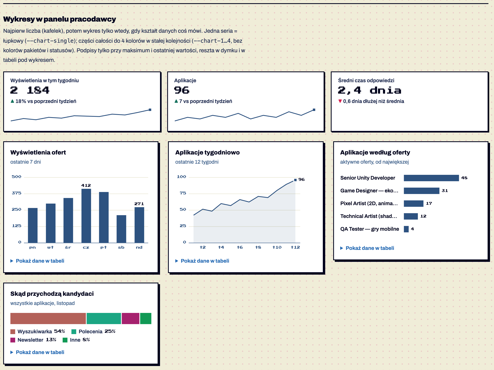
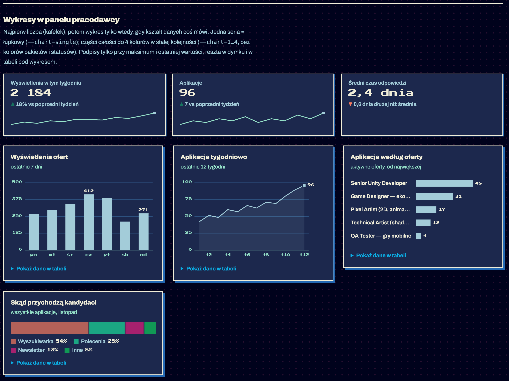

Komponenty / Wykresy
Wykresy i kafelki liczb
testowy Wykresy i kafelki liczb · od 1.8 — brakuje: użycie na 2 ekranach, test z czytnikiem
Liczby w panelu pracodawcy: najpierw kafelek z liczbą i zmianą, wykres tylko wtedy, gdy kształt danych coś mówi. Słupki pionowe — jedna seria w dniach; linia — trend w tygodniach; słupki poziome — ranking z długimi nazwami; pasek „części całości” — do 4 kategorii. Dane do porównywania wielu atrybutów: tabela (K11). Potwierdzone w dokumentacji S01 §6.21.


Anatomia i komponenty składowe
| Część / rola | Wymagana / opcjonalna | Składnik / źródło | Co można zmienić / status |
|---|---|---|---|
| kafelek: etykieta, wartość, zmiana, minilinia | kafelek | .stats > .stat + .chart-spark | Potwierdzone w dokumentacji |
| rama, tytuł, podtytuł | wymagane | figure.chart + figcaption | Potwierdzone w dokumentacji |
| dane | wymagane | script type="application/json" | Potwierdzone w dokumentacji |
| SVG z osią, siatką, podpisami | generowane | charts.js | Potwierdzone w dokumentacji |
| dymek | generowany | .chart-tip | Potwierdzone w dokumentacji |
| legenda | segments | .chart-legend z % | Potwierdzone w dokumentacji |
| tabela danych | generowana | details.chart-data | Potwierdzone w dokumentacji |
Warianty i zastosowanie
| Oś | Wartość | Kiedy użyć | Co się zmienia | Ograniczenia / status / źródło |
|---|---|---|---|---|
| forma | columns | seria w dniach | słupki ≤ 24 px | Potwierdzone w dokumentacji |
| forma | line | trend | linia 2 px, znacznik 8 px, celownik | Potwierdzone w dokumentacji |
| forma | bars | ranking | od największego, nazwa z wielokropkiem | Potwierdzone w dokumentacji |
| forma | segments | udział | jeden pasek 100%, odstęp 2 px | Potwierdzone w dokumentacji max 4 |
| forma | spark | w kafelku | bez osi, ostatni punkt wyróżniony | Potwierdzone w dokumentacji |
Zachowanie, treści i lokalizacja
Podpisy tylko przy maksimum i ostatniej wartości; reszta w dymku (najechanie) i w tabeli „Pokaż dane w tabeli”. Etykiety osi X liczone od ostatniej, by się nie nakładały. Wykres przerysowuje się przy zmianie szerokości Potwierdzone w dokumentacji.
Zalecane i niewskazane
| Zalecane — przykład | Niewskazane — przykład | Powód / status / źródło |
|---|---|---|
| jedna oś Y | dwie osie Y | dwie miary to dwa wykresy Potwierdzone w dokumentacji |
| 4 kategorie + „Inne” | koło z 8 kawałkami | Potwierdzone w dokumentacji |
| podpis przy maksimum | liczba przy każdym słupku | Potwierdzone w dokumentacji |
| --chart-single dla jednej serii, --chart-1…4 dla kategorii | kolory statusów albo pakietów jako serie | status i pakiet mają swoje znaczenie Potwierdzone w dokumentacji |
| tekst w kolorze tekstu | tekst w kolorze serii | czytelność Potwierdzone w dokumentacji |
Tokeny i style
| Zastosowanie | Token | Tryb / wariant | Wartość | Źródło | Status |
|---|---|---|---|---|---|
| jedna seria | --chart-single | jasny / ciemny | #2D5280 / #A3CCD9 | S02 | Potwierdzone w dokumentacji decyzja 2026-11-10 |
| kategorie 1–4 | --chart-1…4 | oba tryby | #B36159 #1BA683 #A6216E #119955 | S02 | Potwierdzone w dokumentacji sprawdzone validate_palette.js; bez kolorów pakietów i statusów |
| siatka | --chart-grid | #E6E2CC / #2D5280 | S02 | Potwierdzone w dokumentacji | |
| opisy osi | --chart-axis | = --ink-3 | S02 | Potwierdzone w dokumentacji |
Wymiary, odległości i układ
| Elementy / krawędzie | Wariant | Wartość / relacja | Token | Reguła / źródło / dokładność |
|---|---|---|---|---|
| słupek | — | ≤ 24 px, 60% pasma | — | Potwierdzone w dokumentacji |
| oś Y | — | 5 linii, „ładne” wartości, kompakt „12 tys.” | — | Potwierdzone w dokumentacji |
| segmenty | — | odstęp 2 px w kolorze tła | — | Potwierdzone w dokumentacji |
Typografia
| Rola tekstu | Styl | Font / weight | Rozmiar | Interlinia | Tracking | Kolor / zachowanie / status |
|---|---|---|---|---|---|---|
| tytuł | — | Archivo 800 | 15 | 20 | — | Potwierdzone w dokumentacji |
| oś, podpisy | — | Press Start 2P | 8 | — | — | --chart-axis / --ink Potwierdzone w dokumentacji |
| wartość kafelka | — | Press Start 2P | 20 | 1.4 | — | Potwierdzone w dokumentacji |
Przykład na żywo
Ta sama sekcja co w examples/wzorce.html — działa na systemie 1.11.0. Przełącz motyw w nagłówku, żeby zobaczyć tryb ciemny.
Wykresy w panelu pracodawcy
Najpierw liczba (kafelek), potem wykres tylko wtedy, gdy kształt danych coś mówi. Jedna seria = łupkowy (--chart-single); części całości do 4 kolorów w stałej kolejności (--chart-1…4, bez kolorów pakietów i statusów). Podpisy tylko przy maksimum i ostatniej wartości, reszta w dymku i w tabeli pod wykresem.
Wyświetlenia ofert
ostatnie 7 dni
Aplikacje tygodniowo
ostatnie 12 tygodni
Aplikacje według oferty
aktywne oferty, od największej
Skąd przychodzą kandydaci
wszystkie aplikacje, listopad
Kod przykładu
<section class="ex" id="wykresy" aria-labelledby="h-ch">
<h2 id="h-ch">Wykresy w panelu pracodawcy</h2>
<p>Najpierw liczba (kafelek), potem wykres tylko wtedy, gdy kształt danych coś mówi. Jedna seria = łupkowy (<code>--chart-single</code>); części całości do 4 kolorów w stałej kolejności (<code>--chart-1…4</code>, bez kolorów pakietów i statusów). Podpisy tylko przy maksimum i ostatniej wartości, reszta w dymku i w tabeli pod wykresem.</p>
<div class="stats">
<div class="stat"><span class="stat-label">Wyświetlenia w tym tygodniu</span><span class="stat-value">2 184</span><span class="stat-delta"><span class="up">18%</span> vs poprzedni tydzień</span>
<div class="chart-spark" data-chart="spark"><script type="application/json">{"labels":["1","2","3","4","5","6","7","8","9","10","11","12"],"values":[120,180,150,210,190,260,240,230,300,280,340,412]}</script></div></div>
<div class="stat"><span class="stat-label">Aplikacje</span><span class="stat-value">96</span><span class="stat-delta"><span class="up">7</span> vs poprzedni tydzień</span>
<div class="chart-spark" data-chart="spark"><script type="application/json">{"labels":["1","2","3","4","5","6","7","8","9","10","11","12"],"values":[6,8,7,9,8,10,7,9,8,11,9,12]}</script></div></div>
<div class="stat"><span class="stat-label">Średni czas odpowiedzi</span><span class="stat-value">2,4 dnia</span><span class="stat-delta"><span class="down">0,6 dnia</span> dłużej niż średnia</span></div>
</div>
<div class="two" style="margin-top:24px">
<figure class="chart" data-chart="columns">
<figcaption><p class="chart-title">Wyświetlenia ofert</p><p class="chart-sub">ostatnie 7 dni</p></figcaption>
<script type="application/json">{"labels":["pn","wt","śr","cz","pt","sb","nd"],"values":[264,298,341,412,388,210,271],"unit":"wyświetleń","labelHeader":"Dzień","valueHeader":"Wyświetlenia"}</script>
</figure>
<figure class="chart" data-chart="line">
<figcaption><p class="chart-title">Aplikacje tygodniowo</p><p class="chart-sub">ostatnie 12 tygodni</p></figcaption>
<script type="application/json">{"labels":["t1","t2","t3","t4","t5","t6","t7","t8","t9","t10","t11","t12"],"values":[42,51,48,60,57,66,62,71,69,80,89,96],"unit":"aplikacji","labelHeader":"Tydzień","valueHeader":"Aplikacje"}</script>
</figure>
<figure class="chart" data-chart="bars">
<figcaption><p class="chart-title">Aplikacje według oferty</p><p class="chart-sub">aktywne oferty, od największej</p></figcaption>
<script type="application/json">{"labels":["Senior Unity Developer","Game Designer — ekonomia gry","Pixel Artist (2D, animacja)","Technical Artist (shadery i narzędzia)","QA Tester — gry mobilne"],"values":[48,31,17,12,4],"unit":"aplikacji","labelHeader":"Oferta","valueHeader":"Aplikacje"}</script>
</figure>
<figure class="chart" data-chart="segments">
<figcaption><p class="chart-title">Skąd przychodzą kandydaci</p><p class="chart-sub">wszystkie aplikacje, listopad</p></figcaption>
<script type="application/json">{"labels":["Wyszukiwarka","Polecenia","Newsletter","Inne"],"values":[412,188,96,61],"unit":"aplikacji","labelHeader":"Źródło","valueHeader":"Aplikacje"}</script>
</figure>
</div>
</section>Właściwości i atrybuty
| Właściwość / atrybut | Typ | Wartości pokazane / opisane | Domyślna | Efekt i zastosowanie | Zależności / status / źródło |
|---|---|---|---|---|---|
| data-chart | enum | columns, line, bars, segments, spark | — | forma | Potwierdzone w dokumentacji |
| labels / values | tablice | — | — | dane | Potwierdzone w dokumentacji |
| unit, labelHeader, valueHeader | tekst | wyświetleń, Dzień | — | dymek i tabela | Potwierdzone w dokumentacji |
| data-height | liczba | 200 | 200 | wysokość wykresu | Potwierdzone w dokumentacji |
Specyfikacja (design.md §6.21)
Kod: assets/charts.js; przykład: examples/wzorce.html#wykresy. Metoda: najpierw forma, potem kolor; paleta sprawdzona skryptem (validate_palette.js: separacja dla daltonizmu, kontrast z tłem, jasność) w trybie jasnym i ciemnym.
| Zadanie danych | Forma | Kod |
|---|---|---|
| jedna liczba + kierunek | kafelek .stat (etykieta, wartość w pixel-foncie, zmiana ▲/▼ „vs poprzedni tydzień”, opcjonalna minilinia) | .stats > .stat + .chart-spark[data-chart="spark"] |
| jedna seria w czasie (dni) | słupki pionowe | figure.chart[data-chart="columns"] |
| jedna seria w czasie (tygodnie, trend) | linia 2 px + znacznik ostatniej wartości | data-chart="line" |
| ranking kategorii, długie nazwy | słupki poziome, od największego | data-chart="bars" |
| części całości, ≤ 4 kategorie | jeden pasek 100% + legenda z % | data-chart="segments" |
Dane: <script type="application/json">{"labels":[…],"values":[…],"unit":"wyświetleń","labelHeader":"Dzień","valueHeader":"Wyświetlenia"}</script> wewnątrz figure, tytuł i podtytuł w figcaption (.chart-title, .chart-sub).
| Token | Jasny | Ciemny | Użycie |
|---|---|---|---|
--chart-single | #2D5280 | #A3CCD9 | jedna seria (słupki, linia, ranking, minilinia) — łupkowy, kontrast 8:1 |
--chart-1 | #B36159 terakota | ten sam | pierwsza kategoria (segments) |
--chart-2 | #1BA683 morski | ten sam | druga |
--chart-3 | #A6216E malinowy | ten sam | trzecia |
--chart-4 | #119955 zielony | ten sam | czwarta |
--chart-grid | #E6E2CC | #2D5280 | linie siatki 1 px |
Zasady: słupki ≤ 24 px, proste narożniki (wyjątek od ogólnej metody wykresów z zaokrąglonym końcem — w systemie nie ma promieni), odstęp 2 px między segmentami, linia 2 px, znacznik 8 px z obwódką w kolorze tła; podpisy tylko przy maksimum i ostatniej wartości, reszta w dymku i w tabeli („Pokaż dane w tabeli” generowana automatycznie); tekst nigdy w kolorze serii; jedna oś Y — dwie miary to dwa wykresy; kolory w stałej kolejności, kolor należy do kategorii, nie do miejsca w rankingu; statusy (§2.7) nie są kolorami serii; więcej niż 4 części → „Inne”. SVG ma role="img" i aria-label ze streszczeniem (maksimum, ostatnia wartość). Kolory kategorii nie są kolorami pakietów (NES) ani statusów (§2.7) — różnica min. ΔE 10 (decyzja 2026-11-10; wcześniej fiolet/złoto/niebieski mylił się z pakietami Epicki/Legendarny/Rzadki). To jedyna czwórka z palety SNES, która przechodzi wszystkie testy w obu trybach; morski i zielony stoją na pozycjach 2 i 4, a legenda zawsze podaje nazwę.
Cel: WCAG 2.2 AA. Statyczne materiały i testy automatyczne w Chrome nie dowodzą zgodności — miejsca oznaczone „Do testu we wdrożeniu” wymagają testu z czytnikiem ekranu (design.md §0.6).
| Obszar | Ustalenie lub wymaganie | Dowód / status | Kryterium / wzorzec | Jak sprawdzić |
|---|---|---|---|---|
| opis | SVG role="img" + aria-label ze streszczeniem (maksimum, ostatnia wartość) | Potwierdzone w dokumentacji | WCAG 1.1.1 | czytnik Do testu we wdrożeniu |
| dane | tabela w details | Potwierdzone w dokumentacji | WCAG 1.3.1 | — |
| kolor | legenda z nazwą i %; paleta CVD ΔE ≥ 11 | skrypt Potwierdzone w dokumentacji | WCAG 1.4.1, 1.4.11 | — |
| dymek | tylko myszą — dane dostępne w tabeli | Do potwierdzenia | WCAG 2.1.1 | klawiatura |
Źródła
S01 §6.21; S03 charts.js; S21 (sekcja Wykresy); validate_palette.js ze skilla dataviz. Paleta zmieniona 2026-11-10 (wcześniej fiolet/złoto/niebieski = kolory pakietów) — porównanie: kwestie-otwarte.html#kolory.